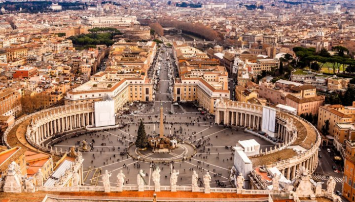
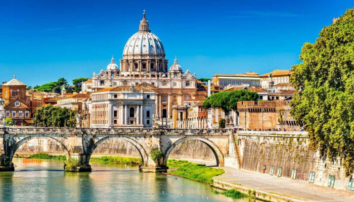
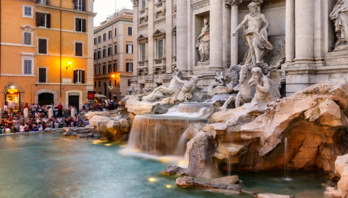
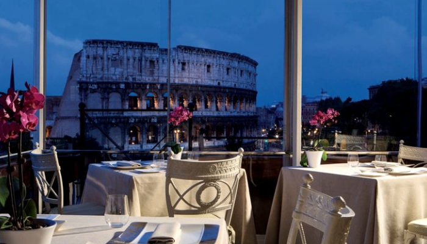
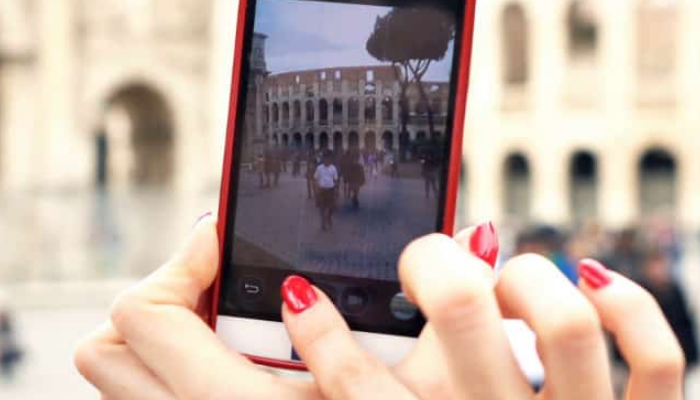
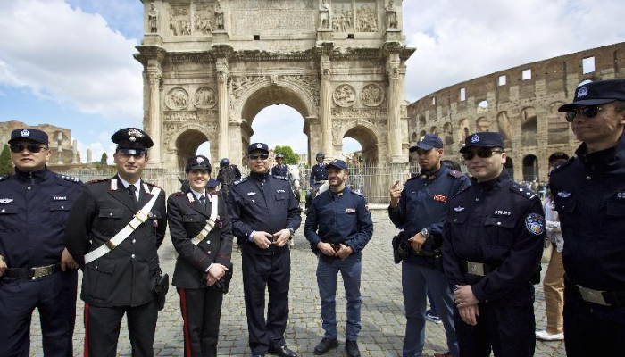

Рим - столиця Італії - один з найважливіших Європи міст. «Вічне місто», один з найважливіших в Європі, колись політичний і культурний центр Римської імперії. Важко порахувати всі пам'ятники, храми, арени, важко зрозуміти велич Риму, але можна прийняти його велич і усвідомити всю його красу.
До того, як стати столицею Італії, Рим протягом століть був столицею світу. Заснований в 753 році до н.е. на берегах Тибру, в 25 км від Тірренського моря, Вічне місто пізнало злети і падіння, але зуміло пронести через століття свою імперську велич. Архітектура Риму зберігає спогади про всі його періоди: республіканської недолугості, імперської впорядкованості, середньовічної роздробленості, ренесансної пишноти і прямолінійності тоталітаризму Беніто Муссоліні. Але, як не дивно, всі ці особливості лише додають шарму місту на семи пагорбах, так само, як зморшки прикрашають обличчя мудрого старого.
У Римі субтропічний середземноморський клімат, який характеризується дуже тривалим і спекотним літом, і м’якою дощовою зимою. Рим розташований на лівому березі річки Тибр, в 25 км від Тірренського моря і майже на такій же відстані від гірського кряжу Апеннін, в долині, що спускається від Апеннін до моря.
Огляд Риму – це не відпочинок, а важка робота, яку старанний турист починає рано вранці і закінчує після заходу сонця. Лише на те, щоб виконати «туристичний мінімум» – сфотографуватися на тлі Колізею, відстояти чергу в Сикстинську капелу, кинути монетку в фонтан Треві, спуститися по сходах площі Іспанії та засунути руку в «Уста правди» – піде не менше тижня. Але ж є ще обрамлені платанами набережні Тибру, тінисті сади вілли Боргезе, пустельні Терми Каракала, жваві ресторанчики площі Навона, зарослий бур’янами цирк Массімо і багато, багато іншого. Відвідуючи пам’ятки Рима, вам обов’язково слід відвідати місто Ватикан. Адже Ватикан – це незалежна держава в центрі Рима з його власною валютою, поштовою службою і армією.
Найпопулярніші готелі Риму розташовані, звичайно, недалеко від Ватикану, але найдоцільніше вибрати готель в Римі, розташований поблизу від головного вокзалу Терміні, звідки легко дістатися автобусом або на метро до будь-якої частини міста. У Римі є тисячі ресторанів, які пропонують страви місцевої, національної та міжнародної кухні, які здатні задовольнити найвимогливішого гурмана. Переважна більшість ресторанів у Римі працюють з 12.30 до 14.30 та з 19.00 до 23.00. У всіх ресторанах вітається попереднє бронювання.
Телефони-автомати в Римі можна знайти всюди. Більшість апаратів працюють по картах передоплати, які можна придбати в багатьох магазинах, в будь-якому тютюновому або газетному кіоску. Міжнародний дзвінок можна здійснити з будь-якого телефону-автомата, поміченого анонсом Interurbano. Міжнародний код Італії – 39, код Риму і Ватикану – 06 Інтернет-послуги в Римі можна отримати практично у всіх аеропортах, великих готелях, на торгових вулицях, в деяких супермаркетах, ресторанах і в інших громадських місцях можна знайти як інтернет-кафе, так і точки бездротового доступу.
У Римі порівняно безпечно, однак звичайні запобіжні заходи необхідні: слід уникати відвідування неблагополучних районів (в Римі, наприклад, вони прилягають до вокзалу «Терміні»), жінкам не рекомендується самостійно здійснювати вечірні прогулянки. У туристичних місцях активно діють кишенькові злодії, так що туристам не слід носити з собою більше грошей, ніж потрібно на день, демонструвати їх у присутності сторонніх, носити гроші та документи в одній кишені або одній сумці.
